Wyrmdesk Handbook
Tools for the game master at the table: prepare your campaign, run fights, put maps on a projector, and let players build their own characters.
1. Overview
Wyrmdesk has four parts that work together. The game master uses the first three, the players use the fourth.
Campaign book, combat tracker and battlemap share one database. A character who takes damage in the tracker has that damage on their character sheet and on the map as well. In every header, 📖 Campaign book · ⚔ Combat · 🗺 Map switches between the three parts. The chosen campaign is the same in all of them.
There are two kinds of pages:
- Game master pages: everything you prepare and control. Secrets and notes are shown here.
- Player displays: the projector image, turn order, handouts and character sheets on phones or tablets. They only show what the players are meant to see.
The interface is available in English and German. Pick the language at the top right of any header. The choice applies to the whole browser.
2. Installation
3. Getting started
Create a campaign
On first launch the campaign book shows + New campaign. Enter a name and choose the world the campaign is set in:
- Forgotten Realms: with the Calendar of Harptos.
- Own world: your own months and calendar.
- Without calendar: free-form dates.
Later campaigns are created under ⚙ Setup → Campaign → + New campaign…. Switch between them in the header.
Fill the library
Classes, species, backgrounds, spells, monsters and items come from the library (menu entries at the bottom left of the campaign book). It is shared by all campaigns. Each of these pages can import the freely available rules content (SRD) from Open5e with one click. You can then add to it or create your own entries. See Library.
A typical workflow
- Create a campaign and fill the library.
- Players build their characters in character creation, and you import them into the campaign book.
- Prepare sessions: create NPCs, places, quests and encounters.
- On game night: handouts and maps on the projector, fights in the tracker or on the map.
- After the game: write the recap and reveal entries to the players.
4. Campaign book
The campaign book is the heart of Wyrmdesk. The rail on the left holds the sections (sessions, journal, timeline, party, NPCs, places …), next to it is the list of the chosen section, and on the right the page of the chosen entry. The start page shows the next and the last session, open quests and recently changed entries.

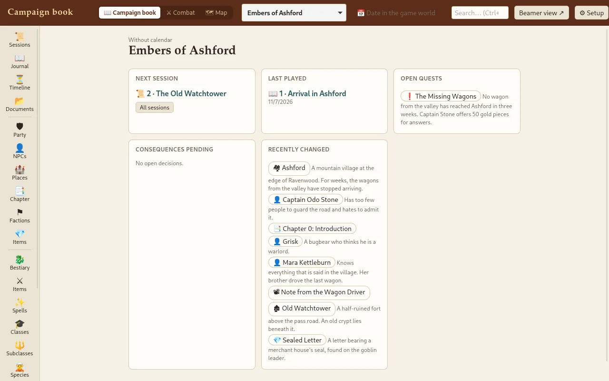
Sessions
A session has three parts, shown as tabs:
- Preparation: your notes for the evening. This is also where you link encounters from the combat tracker. ▶ Show sends an encounter to the combat display.
- At the table: quick notes during play. A note can become a new NPC or entry with one click.
- Recap: what happened, for you and the players.
The status changes from planned to played. Played sessions appear in the journal, events on the timeline. Under Involved the page collects every entry the session links to.

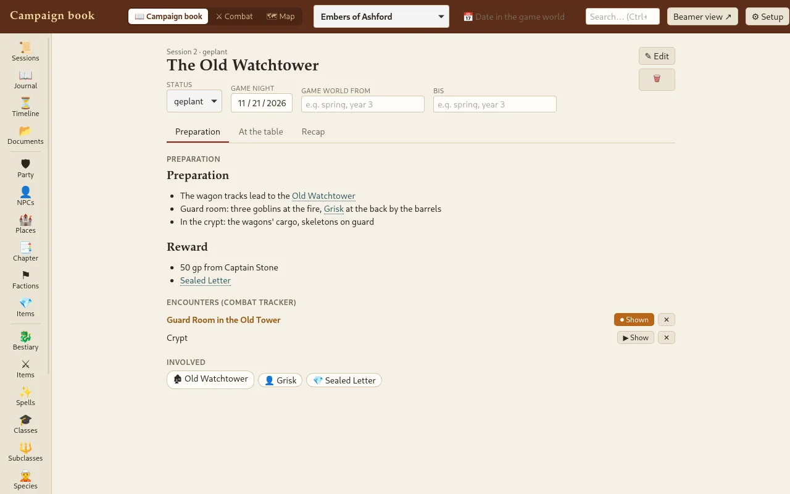
NPCs, places, quests, factions, items
Every entry has a picture, a short description, a text and Secrets (DM only). Depending on its kind it has matching fields: an NPC has a role, attitude, status and whereabouts, a place has a kind (village, tavern, ruin …) and lies in another place, a quest has a quest giver and a status.

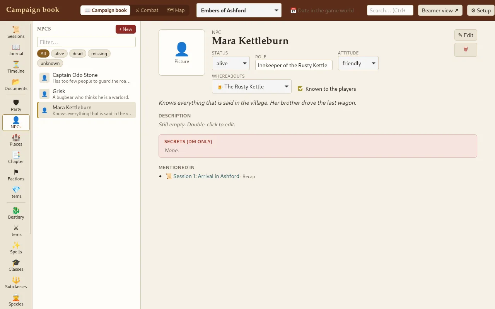
Links: type [[ in a text and the campaign book suggests entries, so [[Mara Kettleburn]] becomes a link. At the bottom, every page shows where it is mentioned in.
Known to the players: new entries start out secret. Switch on Known to the players once the party has learned about them.

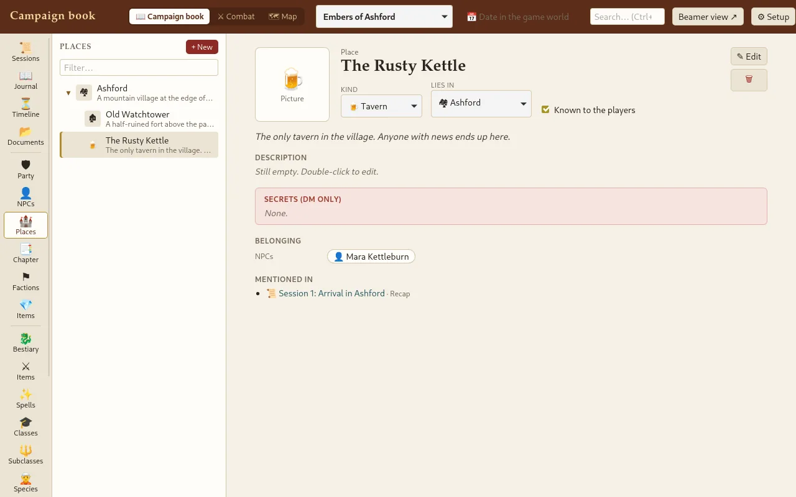

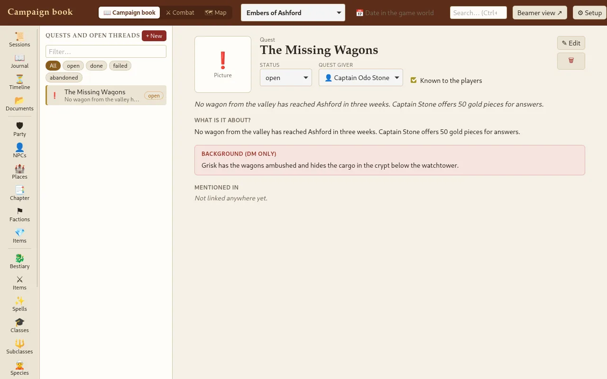
Handouts and beamer
A handout is a picture or text for the players, such as a letter or a map. 📽 Show on beamer puts it on the beamer view, Show the text too adds its text. Any entry's picture can be shown this way. Entries you show count as known to the players afterwards.

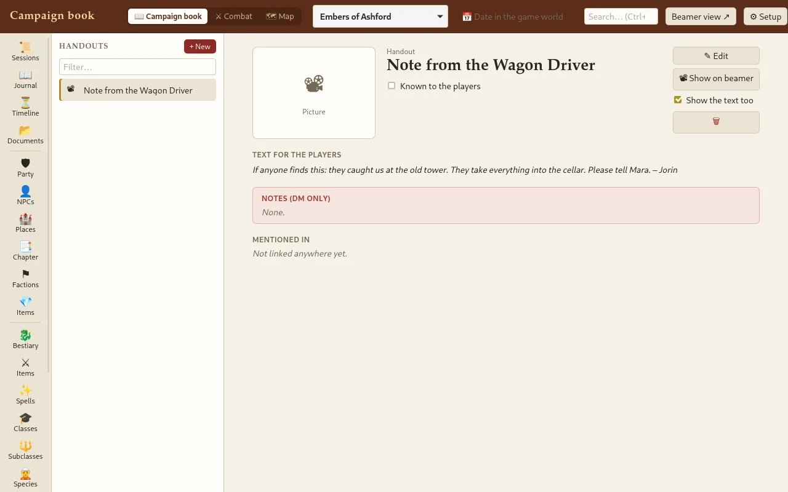
Party and character sheets
Party lists the player characters with full character sheets. The sheet works out armour class, attacks, saving throws, skills and speed by the rules. Equip gear in the inventory with the dot on the left; spells come from the library. ⬆ Level up walks through the next level step by step.
Hit points belong to the character. Whether they change in the tracker, on the map or on the sheet, the same value shows everywhere.

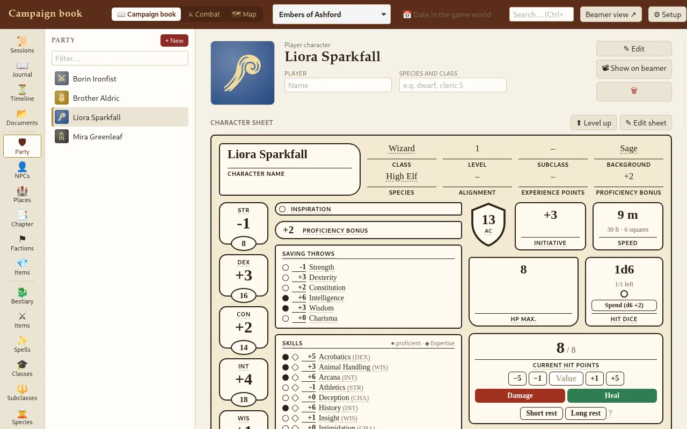
Library
The library covers the bestiary, items, spells, classes, subclasses, species, backgrounds and feats, shared by all campaigns. Each page can:
- import the freely available SRD content from Open5e (one at a time through the search, or all at once),
- create your own entries and edit existing ones,
- filter and search.
Monsters from the bestiary go straight into encounters; spells and items show up on character sheets.

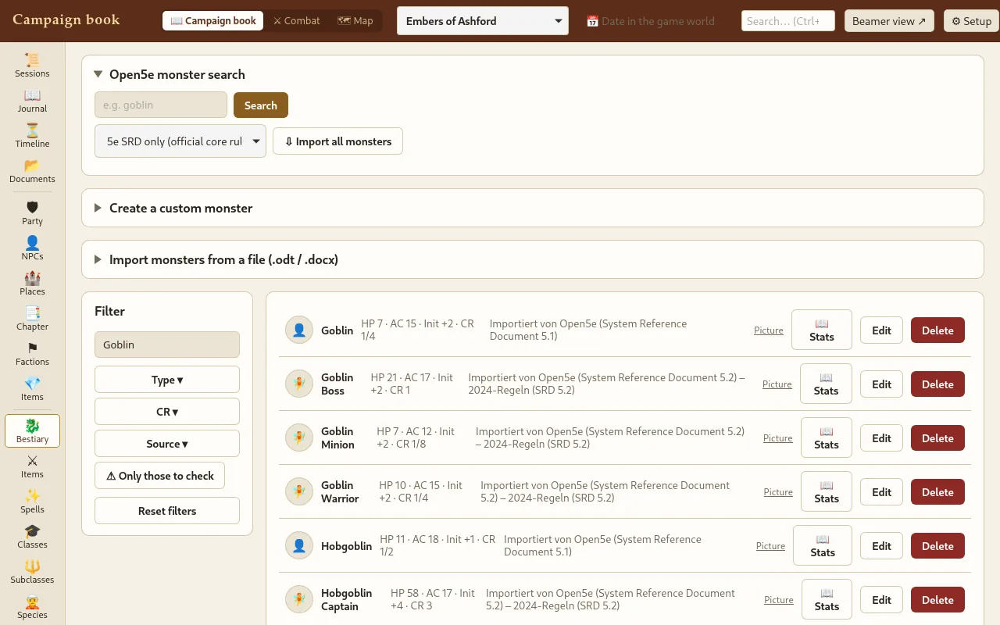
Player view
Players open the player page on a phone, tablet or laptop, pick their character at the top and see the full character sheet. They change hit points, spent spell slots, ammunition and rests directly. ⚔ Turn order shows the initiative bar. The address of the player page is in the combat tracker under Display.

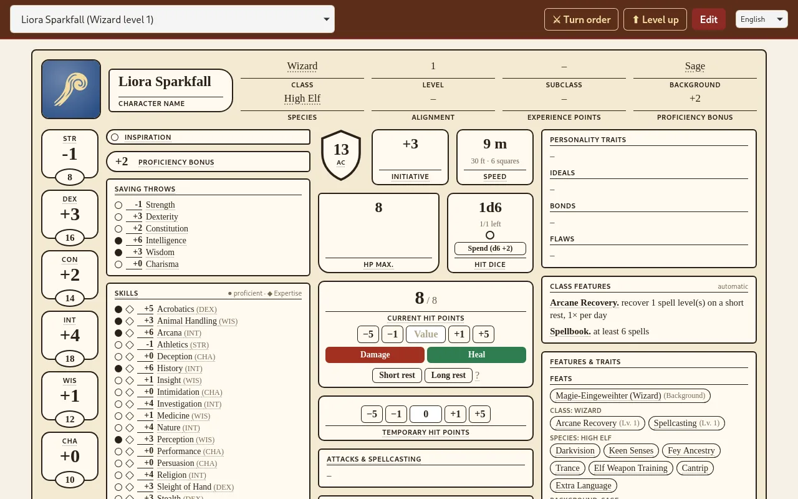
5. Combat tracker
The combat tracker runs your fights. The campaign's encounters are on the left, the chosen encounter on the right with all combatants in initiative order.

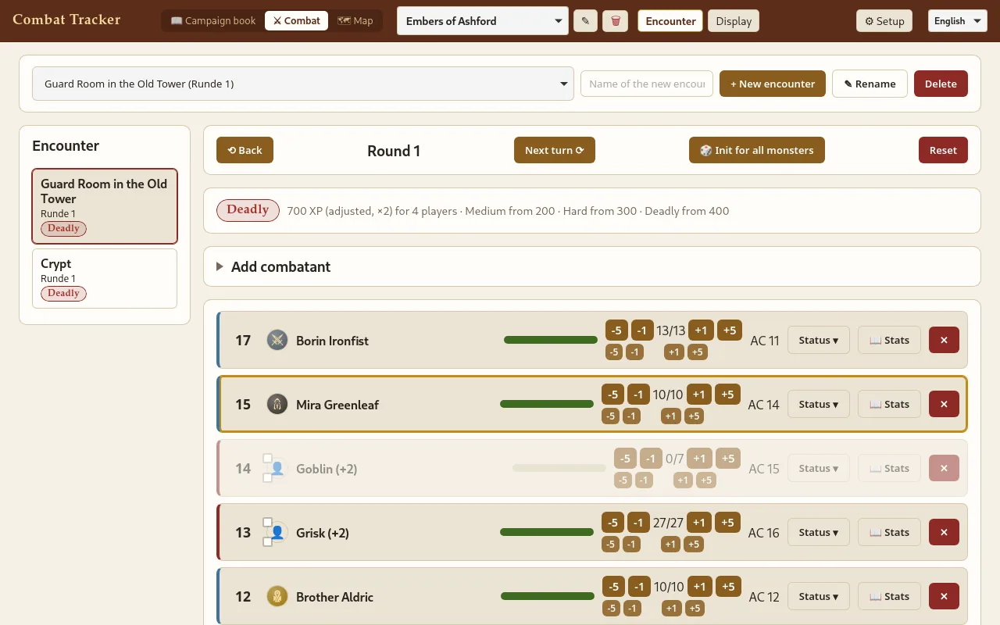
Prepare an encounter
- + New encounter creates an encounter. The party joins automatically.
- Under Add combatant, add monsters from the bestiary.
- The tracker works out the difficulty (easy to deadly) from experience points and party size as you go.
Run the fight
- Enter initiative, or roll for all monsters with 🎲 Init for all monsters.
- Next turn ⟳ and ⟲ Back move to the next combatant; the round counts along.
- −5 −1 +1 +5 change hit points and temporary hit points. At 0 HP a combatant counts as down.
- Status ▾ sets conditions such as poisoned, prone or concentration.
- 📖 Stats opens the monster's stat block.
- Hidden from players keeps a monster off the display and the beamer until you reveal it.
Display for the players
On the Display tab you choose which encounter runs on the player display and find its address. The display shows the turn order with portraits and marks whose turn it is.
6. Battlemap
The battlemap shows maps on your screen and on the beamer. On the left are the sections Scenes, Tools, Vision, Areas, Tokens and Tracker. One click opens a section, another closes it. The yellow frame shows the part of the map that is on the beamer.
Scenes
A scene is one map. Create it with
- + New scene from image: any map image. Set up the grid under ⚙ Setup → Grid, or measure it on the map with 📏.
- + Scene from Dungeondraft (.dd2vtt): map, grid, walls and doors come in ready to use (Dungeondraft: File → Export → Universal VTT).
Scenes belong to the chosen campaign. Show this scene on the beamer (in the setup) sends it to the beamer.
Fog of war
Under Tools you reveal and hide parts of the map with a rectangle, brush or polygon. You always see the whole map; for you the fog is only half opaque. The Area tool outlines rooms, which you later reveal with one click under Areas.

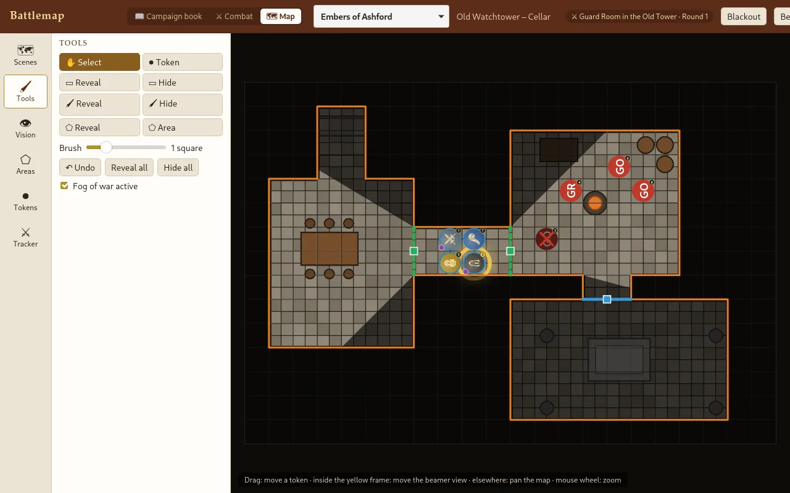
Walls, doors and vision
Under Vision you draw walls and doors (or they come from Dungeondraft). Open and close doors with a click of the select tool. Closed doors and walls block sight.

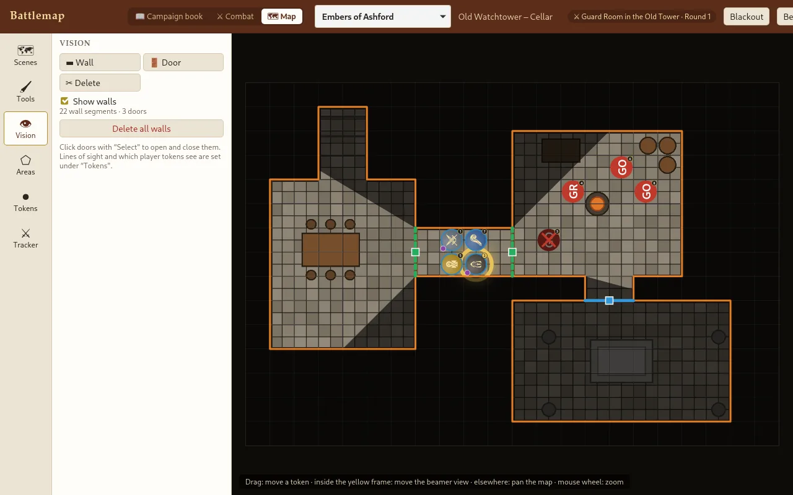
Tokens
Tokens from the tracker encounter places a token with portrait for every combatant of the running encounter. A selected token has a name, size, colour, picture and a link to the tracker. With Show on the beamer switched off, a real miniature stands on the table and the beamer leaves the token out.
Lines of sight: with Lines of sight active switched on, the map reveals what the player tokens see. You choose which tokens see, per token, with 👁 Vision. It is only available for player character tokens and starts switched off. Ground that has been seen stays visible as explored, only dimmed.

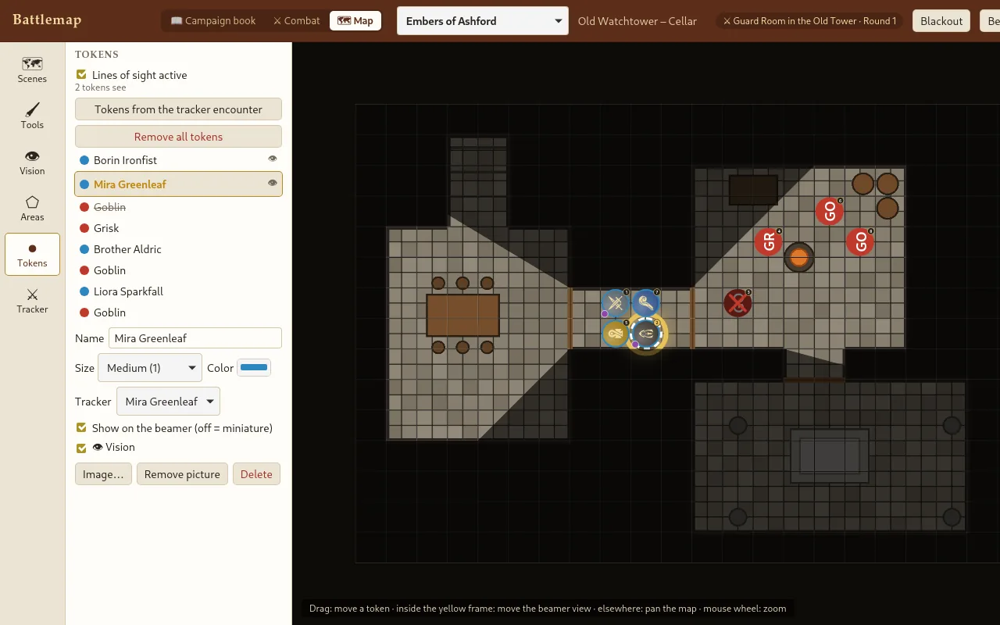
Combat on the map
The Tracker section brings the combat tracker into the map: initiative, next turn, hit points and conditions. Clicking a combatant opens HP and conditions and jumps to their token. Player characters carry a small figure icon after their name. On the map, every token shows its place in the turn order.
Below are the spell areas: cone, circle, cube and line, optionally straight from a spell (e.g. Fireball).

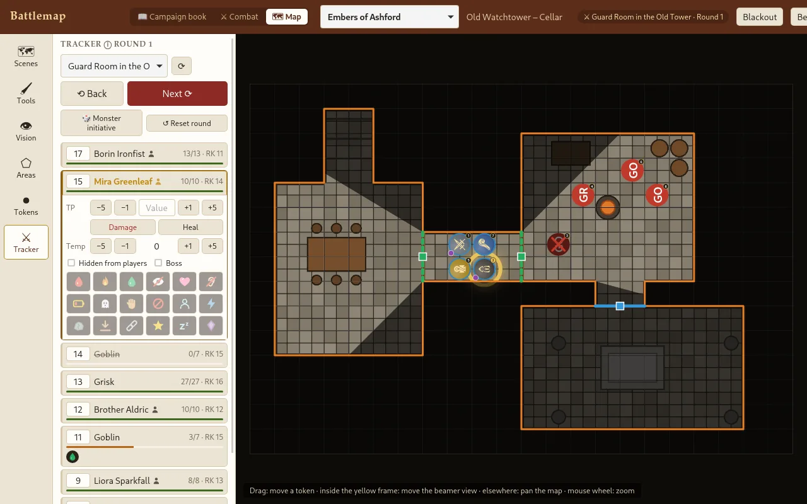
Beamer
Open the beamer view in the browser of the projector computer (the Beamer view ↗ button at the top). A click on the picture switches to full screen. It only shows what has been revealed, and tokens only where the players can see them. The turn order can run along the left edge.

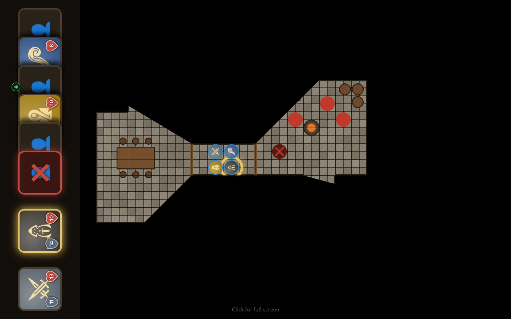
In the map's ⚙ Setup you fit the beamer to your table:
- Rotation, if the projector shines from the side.
- Calibrate: the beamer shows a 10 × 10 cm square. Measure it and adjust pixels per inch until one grid cell is exactly 1 inch (2.54 cm), to match miniatures.
- Keystone correction: drag the corners of the beamer image with the mouse.
- Blackout (key B) turns the beamer black.
- Image instead of battlemap: a picture of your own, e.g. for breaks.
7. Character creation
In character creation, players build their characters themselves, without access to the campaign book. It runs separately and exchanges data only through files.
For the game master: setting up
The administration (/admin/) is protected by a password.
- Upload content: in the campaign book, save the file from ⚙ Setup → Character Creation → ⬇ Export character content and upload it in the administration under Content. Character creation then knows your classes, species, backgrounds, items and spells.
- Create a campaign: each campaign gets its own link for players, optionally with a password. Send this link to your group.
- Session dates: optionally suggest dates for the next sessions; players vote.

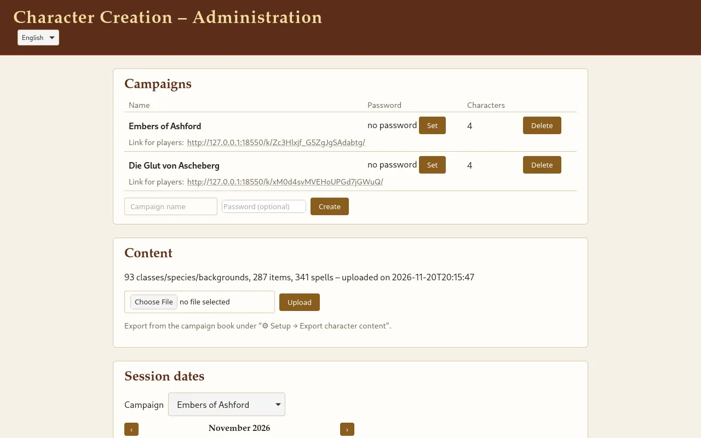
For players: creating a character
Through the link, players see the characters of their campaign. Enter the character's name and your own, then + Create new character.

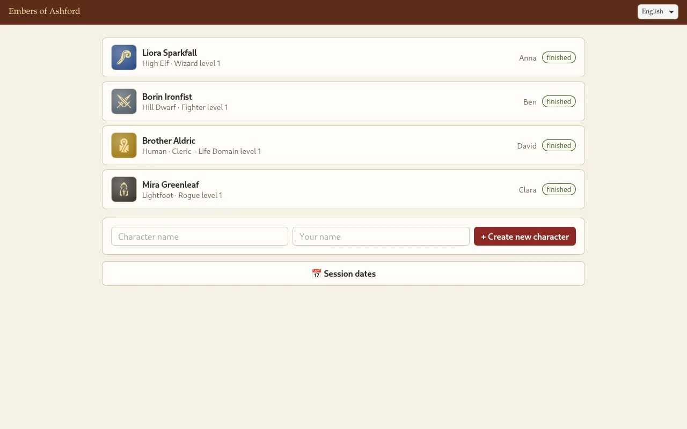
A wizard leads through every step: species, class, background, feats, abilities, skills, languages, spells, equipment. Whatever species, class and background grant is filled in already. The bottom line says what is still missing, and Next only works once the step is complete.

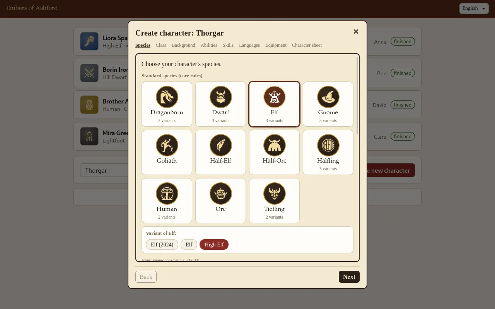

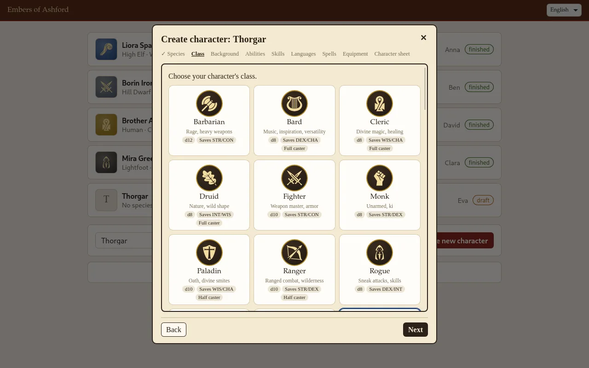
At the end there is the finished character sheet. Players can open and edit it at any time, upload a portrait and later level up with ⬆ Level up. ✓ Mark as finished makes the character ready to be imported.

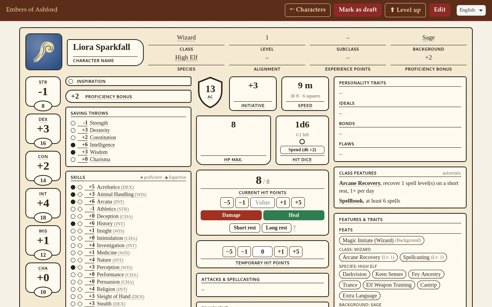
Bringing characters into the campaign book
- In the administration, Export finished characters.
- In the campaign book, choose the file under ⚙ Setup → Character Creation → ⬆ Import characters.
The characters appear under Party, with starting equipment and portrait. If a name already exists, the import asks: skip, replace the character sheet or create a copy.
8. Data and backups
Under ⚙ Setup → Backup in the campaign book:
- ⬇ Download backup: the database and all pictures (uploads, maps, tokens, beamer images) as one ZIP file.
- ⬆ Restore backup: replaces all data with the state of the backup.
Wyrmdesk also makes automatic backups at regular intervals. Combat tracker and battlemap are part of the same database and are included.

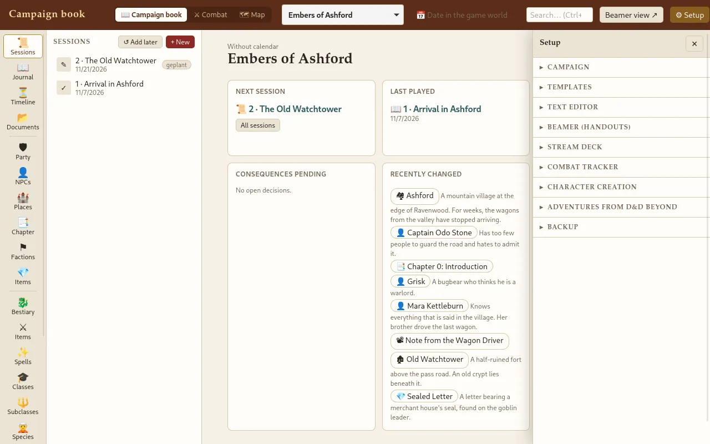
Templates
⚙ Setup → Templates → Save the campaign as a template… takes a snapshot of the campaign, with entries, sessions, encounters and maps. From it you can start the same campaign as often as you like with a new group, optionally with the game state reset.
9. Tips
| Where | Key | Effect |
|---|---|---|
| Battlemap | B | Turn the beamer black |
| Battlemap | N / Shift+N | Next / previous turn |
| Battlemap | V T R P W D | Select, token, rectangle, brush, wall, door |
| Battlemap | Ctrl+Z | Fog: undo the last step |
| Beamer | F11 / click | Full screen |
| Campaign book | [[ | Insert a link to an entry |
- Underlined terms on the character sheet show an explanation when tapped.
- The search at the top of the campaign book finds entries, sessions and texts across the whole campaign.
- The language is set per browser. Beamer and player displays follow the browser they run in.